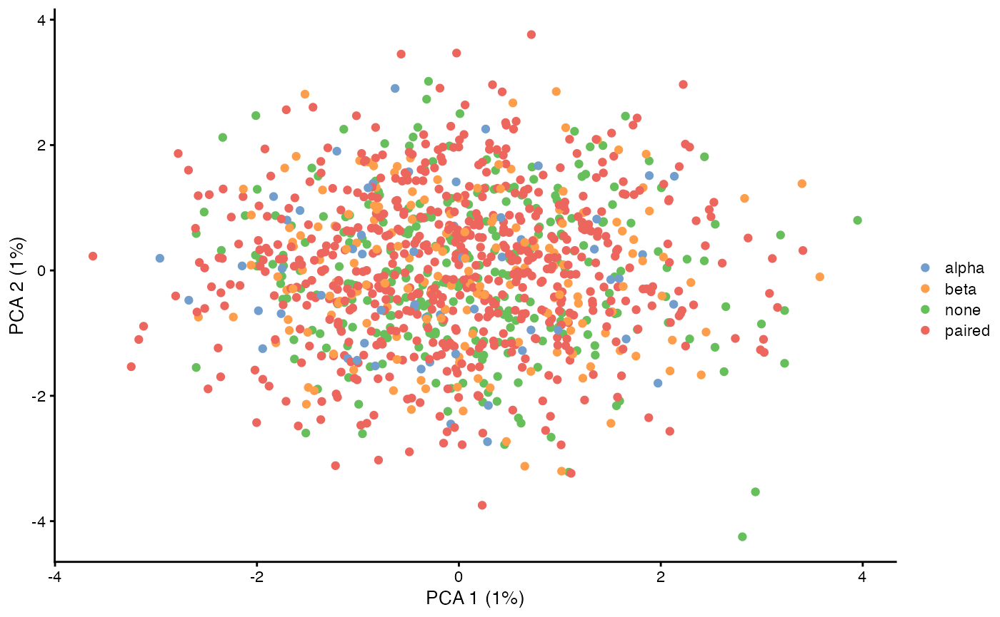
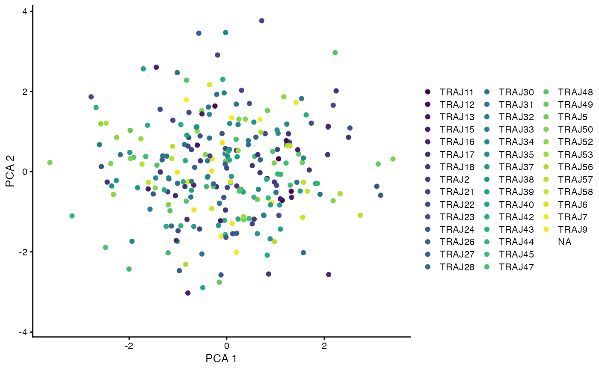
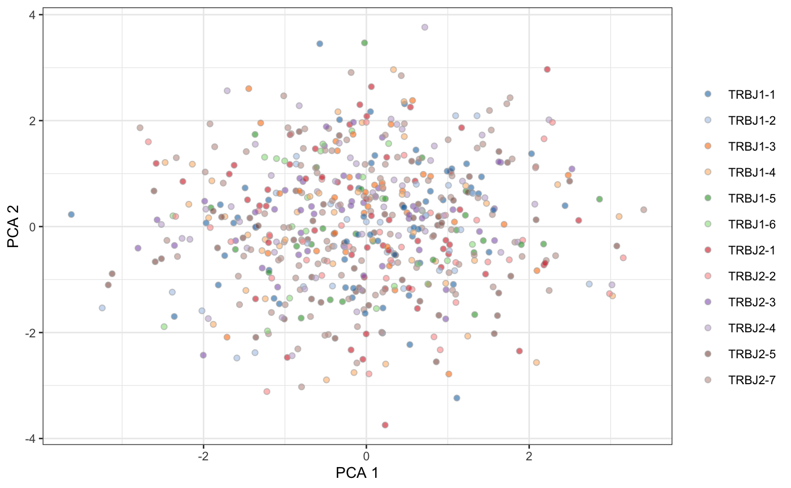

vignettes/repertoire_and_expression.Rmd
repertoire_and_expression.Rmdlibrary(CellaRepertorium)
library(SingleCellExperiment)
#> Loading required package: SummarizedExperiment
#> Loading required package: GenomicRanges
#> Loading required package: stats4
#> Loading required package: BiocGenerics
#> Loading required package: parallel
#>
#> Attaching package: 'BiocGenerics'
#> The following objects are masked from 'package:parallel':
#>
#> clusterApply, clusterApplyLB, clusterCall, clusterEvalQ,
#> clusterExport, clusterMap, parApply, parCapply, parLapply,
#> parLapplyLB, parRapply, parSapply, parSapplyLB
#> The following object is masked from 'package:CellaRepertorium':
#>
#> rbind
#> The following objects are masked from 'package:stats':
#>
#> IQR, mad, sd, var, xtabs
#> The following objects are masked from 'package:base':
#>
#> anyDuplicated, append, as.data.frame, basename, cbind,
#> colnames, dirname, do.call, duplicated, eval, evalq, Filter,
#> Find, get, grep, grepl, intersect, is.unsorted, lapply, Map,
#> mapply, match, mget, order, paste, pmax, pmax.int, pmin,
#> pmin.int, Position, rank, rbind, Reduce, rownames, sapply,
#> setdiff, sort, table, tapply, union, unique, unsplit, which,
#> which.max, which.min
#> Loading required package: S4Vectors
#>
#> Attaching package: 'S4Vectors'
#> The following object is masked from 'package:base':
#>
#> expand.grid
#> Loading required package: IRanges
#> Loading required package: GenomeInfoDb
#> Loading required package: Biobase
#> Welcome to Bioconductor
#>
#> Vignettes contain introductory material; view with
#> 'browseVignettes()'. To cite Bioconductor, see
#> 'citation("Biobase")', and for packages 'citation("pkgname")'.
#> Loading required package: DelayedArray
#> Loading required package: matrixStats
#>
#> Attaching package: 'matrixStats'
#> The following objects are masked from 'package:Biobase':
#>
#> anyMissing, rowMedians
#> Loading required package: BiocParallel
#>
#> Attaching package: 'DelayedArray'
#> The following objects are masked from 'package:matrixStats':
#>
#> colMaxs, colMins, colRanges, rowMaxs, rowMins, rowRanges
#> The following objects are masked from 'package:base':
#>
#> aperm, apply, rowsum
library(dplyr)
#>
#> Attaching package: 'dplyr'
#> The following object is masked from 'package:matrixStats':
#>
#> count
#> The following object is masked from 'package:Biobase':
#>
#> combine
#> The following objects are masked from 'package:GenomicRanges':
#>
#> intersect, setdiff, union
#> The following object is masked from 'package:GenomeInfoDb':
#>
#> intersect
#> The following objects are masked from 'package:IRanges':
#>
#> collapse, desc, intersect, setdiff, slice, union
#> The following objects are masked from 'package:S4Vectors':
#>
#> first, intersect, rename, setdiff, setequal, union
#> The following objects are masked from 'package:BiocGenerics':
#>
#> combine, intersect, setdiff, union
#> The following objects are masked from 'package:stats':
#>
#> filter, lag
#> The following objects are masked from 'package:base':
#>
#> intersect, setdiff, setequal, union
library(ggplot2)
library(readr)
library(tidyr)
#>
#> Attaching package: 'tidyr'
#> The following object is masked from 'package:S4Vectors':
#>
#> expand
library(stringr)
library(purrr)
#>
#> Attaching package: 'purrr'
#> The following object is masked from 'package:DelayedArray':
#>
#> simplify
#> The following object is masked from 'package:GenomicRanges':
#>
#> reduce
#> The following object is masked from 'package:IRanges':
#>
#> reduceset.seed(1345)
data(ccdb_ex)
barcodes = ccdb_ex$cell_tbl[ccdb_ex$cell_pk]
# Take a subsample of almost all of the barcdes
barcodes = barcodes[sample(nrow(barcodes), nrow(barcodes) - 5),]
samples = unique(ccdb_ex$cell_tbl[setdiff(ccdb_ex$cell_pk, 'barcode')])
# For each sample, generate 0-100 "extra" barcodes for which only 5' expression is recovered
extra = samples %>% rowwise() %>% mutate(extrabc = {
extra_bc = floor(runif(1, 0, 100))
list(tibble(barcode = paste0('barcode', seq_len(extra_bc))))
})
extra = extra %>% unnest()
all_bc = bind_rows(extra, barcodes)Simulate some “cells” and “genes” that nearly form a superset of the cells for which repertoire are available. This is generally true if no barcode filters have been applied to the expression data. In practice a few cells may have repertoire but not expression (or fail QC for expression). We will work with the intersection of these cells.
ccdb2 = ContigCellDB(ccdb_ex$contig_tbl, contig_pk = ccdb_ex$contig_pk, cell_tbl = colData(sce), cell_pk = ccdb_ex$cell_pk, equalize = FALSE)
ccdb2 = cdhit_ccdb(ccdb2, 'cdr3', type = 'AA', cluster_name = 'aa80', identity = .8, min_length = 5)
ccdb2 = fine_clustering(ccdb2, sequence_key = 'cdr3', type = 'AA', keep_clustering_details = FALSE)
#> Calculating intradistances on 997 clusters.
#> SummarizingKey is to construct with equalize = FALSE, which will allow some cells to lack contigs.
colData(sce)$alpha = canonicalize_cell(ccdb2, chain == 'TRA', contig_fields = c('chain', 'v_gene','d_gene', 'j_gene', 'aa80'))
colData(sce)$beta = canonicalize_cell(ccdb2, chain == 'TRB', contig_fields = c('chain', 'v_gene','d_gene', 'j_gene', 'aa80'))
colData(sce)$pairing = enumerate_pairing(ccdb2, chain_recode_fun = 'guess')We can leverage Scater’s ability to use “nested” data frames to visualize TCR features.
library(scater)
#>
#> Attaching package: 'scater'
#> The following objects are masked from 'package:dplyr':
#>
#> arrange, filter, mutate, rename
#> The following object is masked from 'package:S4Vectors':
#>
#> rename
#> The following object is masked from 'package:stats':
#>
#> filter
sce = normalizeSCE(sce)
#> Warning in normalizeSCE(sce): using library sizes as size factors
sce = runPCA(sce)
plotReducedDim(sce, use_dimred = 'PCA', colour_by = c('pairing', 'pairing'))
Here we calculate the first two principal components (which don’t show much because these are simulated data without any special structure), and then visualize if the TCR was paired or not.
only_paired = sce[,which(sce$pairing$pairing == 'paired')]
plotReducedDim(only_paired, use_dimred = 'PCA', colour_by = c('alpha', 'j_gene'))

Since the ContigCellDB is nested within the SingleCellExperiment it automatically gets subsetted appropriately when the parent object is subsetted. Enough data.frame-like semantics have been implemented so that fields from the cell_tbl can be visualized.